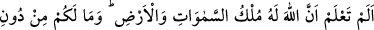
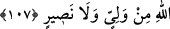

kaldırılıp, “savaşın meşrû” kılınmasıdır. Bazan da nesh, evvelki âyetin misliyle olur.
Yâni hüküm itibâriyle daha ağır veya daha hafîf olmaksızın fâide ve sevâb bakımından
bir benzer âyetle olabilir. Kıble’nin Beyt-i Makdis’den Kâbe’ye çevrilmesinde olduğu
gibi. Âyette zikredilen nesh, hükmü tam bir âyetin veya fazlasının neshedilmesine
mahsûs değildir. Aksine daha az bir kısmı içerisine almaktadır. Âyette bu şekilde
zikrolunması, neshin genellikle bir veya daha fazla âyet üzerinde cereyân etmesindendir.
Her ne kadar nesheden âyete “nâsih” adı veriliyor ise de gerçekte hakîkî nâsih, Allah
Teâlâ’dır. Hükmü kaldırılan âyete de “mensûh” denir.
Neshin hikmetine gelince; nasıl ki bedenin hastalıklarıyla uğraşan doktor, mizâçların
ve zamânın farklılığına göre ilaçları ve gıdâları değiştiriyorsa, nefislerin ıslah ve
tedâvîsi ile uğraşan nebîler de, nefs için bir nevi ilaç menzilesinde olan ahlâkî ve dînî
hükümleri, Şâri’in emriyle değiştirmektedir. Nefislerin gıdâları ve ilaçları şer’î ameller
ve güzel ahlâktır. Sûrî maslahatların değişmesine göre o hükümleri değiştirir. Bir ilaç
beden için bir dönem devâ olabildiği gibi, bir süre sonra hastalık getirebilir. Aynı
şekilde bâzı ameller de bir dönem için iyi ve yararlı olabildikleri halde zamanla insan
için zararlı ve ifsâd edici olabilir. Mürşid ile mürîdin durumunu buna kıyâs et. Zira
terbiye, meşreblerin durumları göz önünde bulundurularak seyr-u sülûke girmeye
bağlıdır. Bunu ise, ancak bu yolda nasîbi olan, bu işin ehli gerçek mürşidler
uygulayabilir. Nitekim Mesnevî’de şöyle gelmiştir:
“Neshetmeyiz” âyetinin işâreti, “unutturmayız” demektir.
Ey gâfil, hemen arkasından “daha hayırlısını getiririz” gelmiştir.
Hakk’ın hükmünü kaldırıp neshettiği her şerîat ki,
O’nun yerine ondan daha güzelini göndermiştir.
Bu olaylar âleminin kumandanı ancak O’dur.
Bu âlemler mülkünün mâlik ve müdebbiri de O’dur.
Dikmeyi bilen, söküp yırtmayı bilmez mi?
Satan sattığı her şeyin yerine daha iyisini almaz mı?
107. (Yine) bilmez misin, göklerin ve yerin mülkiyet ve hükümranlığı yalnızca
Allah’ındır? Sizin için Allah’dan başka ne bir dost ne de bir yardımcı vardır.
“Bilmez misin?” hıtâbı, Nebî (s.a.)’edir. “İstifhâm” ise takrîr içindir; yâni muhakkak
biliyorsun ki Allah, her şeye kâdirdir. O halde bir âyeti neshedip onun bir benzerini
veya ondan daha hayırlısını getirmeye elbette gücü yeter. Âyet-i kerîmede hitâbın
hükmü tüm insanlara olmasına rağmen, hitâbın sâdece Nebî’ye has kılınması, aslında
muhâtab tarafından bilinen bir şeyin takrîrî; yâni pekiştirilmesi içindir. Zira bunu